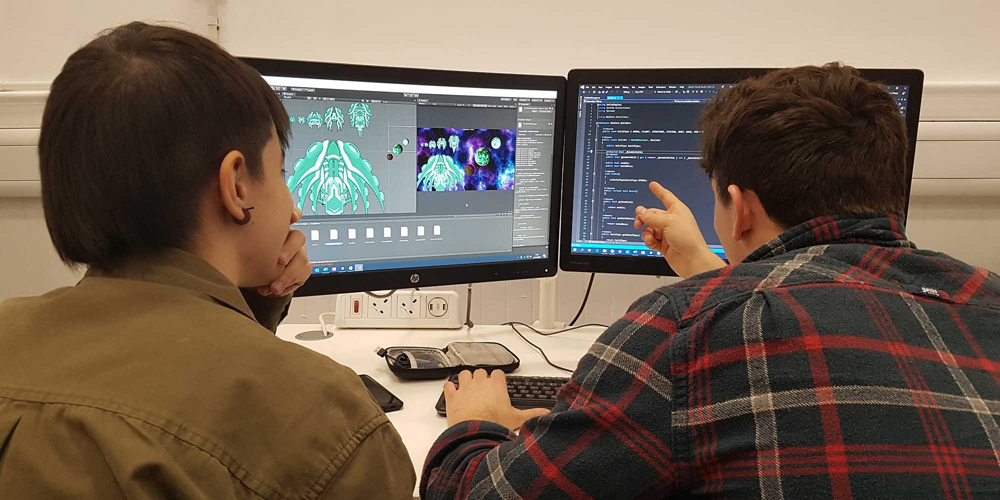
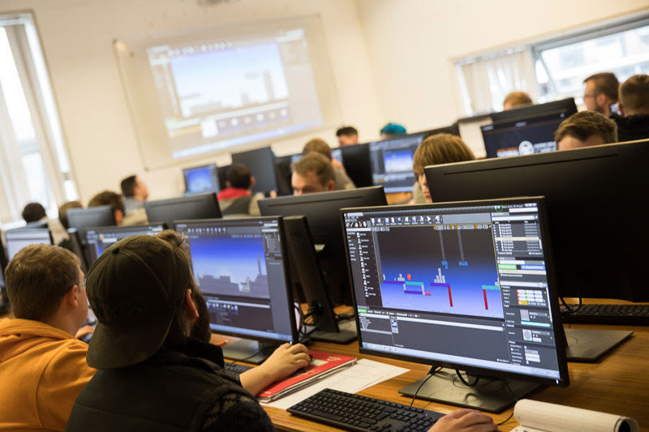

TThe College is an internationally connected creative community of diverse disciplines housed under one roof. We shape our students' futures, preparing them to shape the world through applied knowledge and creativity.

The College's art and design courses don't just train you, they promote alternative ways of thinking, making and communicating; they provide you with space, tools and inspiration to develop your creative practice and a clear career path. You'll get expert teaching from active practitioners and researchers who will encourage you to adopt innovative and resourceful approaches that both perceive and create opportunities for better lives.

You will develop your creative practice whilst interacting with your peers in well-equipped studios, making and digital workshops. At the same time, you'll learn professional skills by working on applied briefs facilitated through our links with commercial clients, cultural institutions, businesses and organisations.